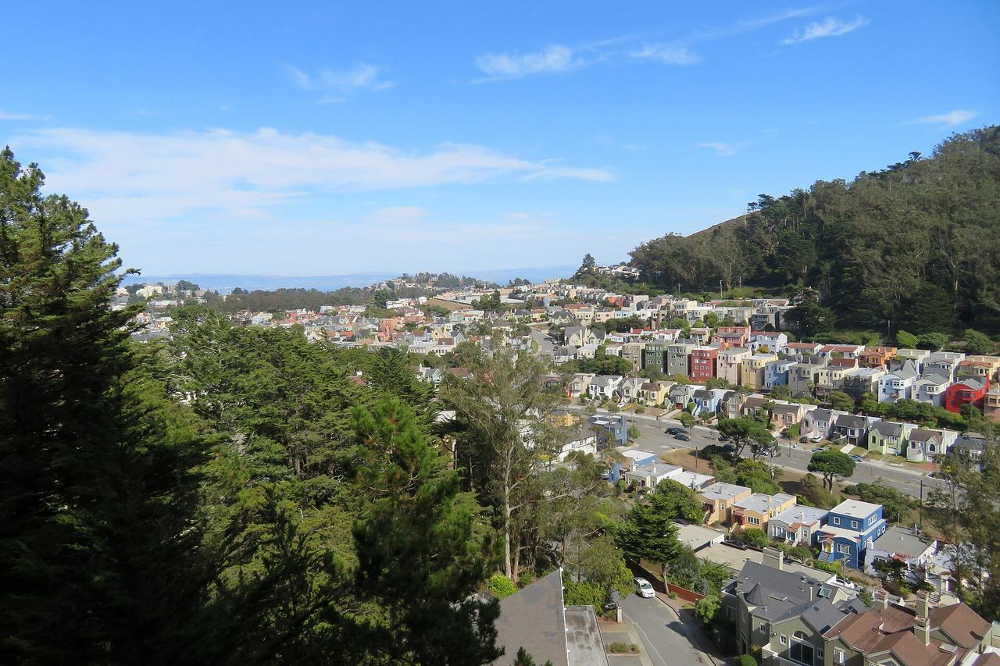

West of Twin Peaks
The city's West of Twin Peaks analysis neighborhood, the residence parks and tracts on the western slopes above Portola Drive. Coverage begins with the parcels the Office of the Assessor-Recorder photographed for tax assessment between 1946 and 1951.

Map
Named buildings and landmarks
-
-
-
-
-
-
-
-
-
-
Streets documented so far
- 15th Avenue
1 building, built 1945. - 16th Avenue
1 building, built 1947. - 17th Avenue
2 buildings, built 1950–2020. - 18th Avenue
1 building, built 1920. - 19th Avenue
1 building, built 1913. - 9th Avenue
1 building, built 1954; 1 in the Forest Hill Historic District. - Casitas Avenue
1 building, built 1953. - Castenada Avenue
1 building, built 1929; 1 in the Forest Hill Historic District. - Claremont Boulevard
1 building, built 1929. - Darien Way
1 building; 1 in the Balboa Terrace Historic District. - Edgehill Way
1 building, built 1970. - El Verano Way
1 building, built 1926. - Faxon Avenue
1 building, built 1918. - Foerster Street
1 building, built 1900. - Frida Kahlo Way
1 building. - Funston Avenue
1 building, built 1936. - Juanita Way
1 building, built 1927. - Junipero Serra Boulevard
1 building, built 1920; 1 in the St. Francis Wood Historic District. - Laguna Honda Boulevard
1 building, built 1937; 1 in the Laguna Honda Historic District. - Lansdale Avenue
2 buildings, built 1935–1936. - Lenox Way
1 building, built 1926. - Lopez Avenue
1 building, built 1928; 1 in the Forest Hill Historic District. - Los Palmos Drive
1 building, built 1948. - Magellan Avenue
1 building, built 1926; 1 in the Forest Hill Historic District. - Maywood Drive
1 building, built 1927. - Merced Avenue
1 building, built 1922; 1 in the Forest Hill Historic District. - Miraloma Drive
1 building, built 1957. - Miramar Avenue
1 building, built 1932. - Molimo Drive
1 building, built 1949. - Monterey Boulevard
1 building, built 1925; 1 in the St. Francis Wood Historic District. - Ocean Avenue
1 building, built 1922; 1 in the Ingleside Terrace Historic District. - Pacheco Street
1 building, built 1917; 1 in the Forest Hill Historic District. - Plymouth Avenue
1 building, built 1918. - Portola Drive
1 building, built 1955. - Saint Francis Boulevard
1 building, built 1948; 1 in the St. Francis Wood Historic District. - San Andreas Way
1 building, built 1941; 1 in the St. Francis Wood Historic District. - San Anselmo Avenue
1 building, built 1942; 1 in the St. Francis Wood Historic District. - San Leandro Way
1 building, built 1923; 1 in the St. Francis Wood Historic District. - San Marcos Avenue
6 buildings, built 1933–1965; 6 in the Forest Hill Historic District. - San Pablo Avenue
1 building, built 1964; 1 in the St. Francis Wood Historic District. - San Rafael Way
1 building, built 1935; 1 in the St. Francis Wood Historic District. - Santa Ana Avenue
1 building, built 1949; 1 in the St. Francis Wood Historic District. - Santa Clara Avenue
1 building, built 1938; 1 in the St. Francis Wood Historic District. - Santa Monica Way
1 building, built 1918; 1 in the St. Francis Wood Historic District. - Santa Paula Avenue
1 building, built 1923; 1 in the St. Francis Wood Historic District. - Sotelo Avenue
1 building, built 1914; 1 in the Forest Hill Historic District. - Stonecrest Drive
2 buildings, built 1939–1941. - Taraval Street
3 buildings, built 1950. - Teresita Boulevard
1 building, built 1951. - Terrace Drive
1 building, built 1937; 1 in the St. Francis Wood Historic District. - Ulloa Street
1 building, built 1938. - West Portal Avenue
2 buildings, built 1935–1992. - Westwood Drive
2 buildings, built 1917–1922. - Winston Drive
1 building, built 1900. - Woodside Avenue
1 building. - Yerba Buena Avenue
1 building, built 1928; 1 in the St. Francis Wood Historic District.
Parks and public spaces
- Edgehill Mountain
Neighborhood park or playground, 2.4 acres. - Hawk Hill
Neighborhood park or playground, 4.8 acres. - Mt. Davidson Park
Regional park, 40.7 acres. - West Portal Playground
Neighborhood park or playground, 1.3 acres.
Historic districts here
Adjacent neighborhoods
The residence parks run from the Twin Peaks ridge down to Ocean Avenue. The Inner Sunset adjoins north and Sunset / Parkside west, Glen Park east across Glen Canyon, and the Outer Mission and Oceanview / Merced / Ingleside south. Ingleside Terraces, one of the tracts inside this boundary, is filed on its own here.